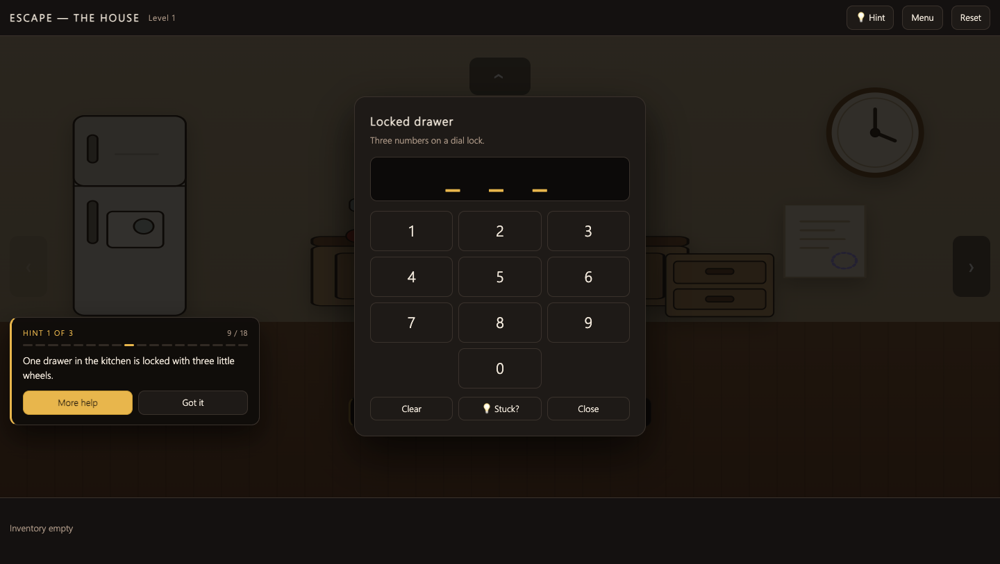
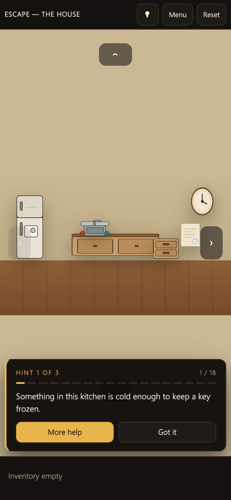

The original is a Desmos activity: rooms, codes, items and flags all living inside a graphing calculator's expression list. This is a rebuild of it as a single 85,196-byte HTML file that opens with no network, no assets and no install — 21 rooms across three levels, six lock mechanics, the original's exact codes, and a three-tier hint system that reads your own save file to know which step you are stuck on.
“can you make the game fully follow the original version and add a hit button on the top that helps poeple who are doing the thing and they dont know how to do”
Two requirements, and the second one is a design problem rather than a feature: a hint button that is useful while somebody is inside a puzzle, not only between puzzles.
The Desmos activity stores its whole game in the expression list. Reading the exported state gives the real structure — not what the screenshots look like, but what the author wired up:
| evidence | count | what it gave me |
|---|---|---|
expressions.list | 794 | 576 expressions, 175 images, 42 folders, 1 text note |
clickableInfo | 55 | every hotspot's click action, in Desmos action-list form |
| folders | 42 | the author's own grouping: room art, puzzle art, state machine, item art |
| rooms (by coordinates) | 9 | each room is a fixed viewport + P_{centerScene}; nine centres cluster on a 3×3 grid |
uploads.desmos.com | 175 | every image is a public URL, so clue art could be downloaded and read |
The flags are brace-named, which is why naive grep misses them: the switch is
u_{lightsOn}, the trapped door is u_{iceKey}, the dart is u_{sedDart}.
Strip the braces and the whole dependency graph falls out of the click actions. Every code in this rebuild came
out of that graph — 131 on the kitchen drawer, 962 on the bedroom keypad,
4 5 19 13 15 19 on the bookcase panel (A1Z26 for DESMOS), and 7:30 for the clock.
Eleven items, each one opening exactly one thing. Nothing is decorative: every item in the original's inventory has a consumer, and every consumer has a producer.
| item | found | used on | opens |
|---|---|---|---|
| Ice cube | kitchen fridge | hot tap | ice key |
| Ice key | made at the sink | living-room trapdoor | basement landing |
| Dart | basement store, slice wheel | balloon | the rope, then the stairs |
| Gloves | bedroom wall | greenhouse cactus | gold key |
| Gold key | cactus | glass case | magnifier |
| Magnifier | glass case | desk lamp | fire (needs the lamp on too) |
| Screwdriver | bedroom nightstand | bedroom keypad and office computer | greenhouse door · computer panel |
| Clock hands | library shelf | kitchen clock | bike chain (clock face opens) |
| Bike chain | inside the clock | living-room bike | nothing — pure payoff |
| UV light | library bookcase panel | walls in every room | the codes you cannot see otherwise |
| Tape | kitchen drawer | (read directly) | the bookcase code |
| lock | interaction | where | code |
|---|---|---|---|
| 3-digit dial | three wheels, click to advance each digit | kitchen drawer | 1·3·1 |
| Three-key keypad | 7-segment style pad, needs the screwdriver to expose it | bedroom | 9·6·2 |
| Six number dials | six wheels running 1–26, because the code is a word | library bookcase | 4 5 19 13 15 19 |
| Clock | fit the hands, then set 7:30 — the face swings open | kitchen | 7:30 |
| Slice wheel | five wedges rotate; every wedge must land on 2, 6 or 9 | basement dart cabinet | — |
| Node panel | four wires click round a cycle until they line up, then the power button | office computer | — |
The first rebuild used the clock as a wall code only. In the original the clock takes two inputs — the hands from the library shelf and the time from a UV mark in the basement — and then opens, with the bike chain inside. That chain is the only thing that makes the living-room bike do anything, and the bike is a dead end on purpose: the author put a payoff there with no lock behind it.
Screwdriver to open the panel → four nodes to align → power button → lights-out grid → the disk
drive ejects. The first pass collapsed all of that into a single click. Also corrected: the screwdriver in the
original opens the computer panel, not the keypad — the keypad's gate is its own flag
(u_{keypadOpen}), and the two were being conflated because both are in the bedroom.
The request was a button for people “doing the thing and they don't know how to do”. A single “here's the answer” button fails that: it either spoils the puzzle or says nothing useful. So the hint is a ladder — three rungs per puzzle beat, and it knows which beats you have already passed.
No answer, no object, no room unless you are lost. “Something in the kitchen is cold enough to lock a key.” Enough to restart a stalled player.
“Open the fridge and take the ice cube, then select it and click the hot tap.” The action, in order, still without handing over a code.
The code itself, plus the room it belongs to. Only on the third ask for the same beat — a player who re-asks twice has stopped enjoying being stuck.
Header button and the H key; plus a 💡 Stuck? button inside every lock panel, so the
hint is reachable from behind the modal backdrop — the exact moment it is needed.
// one beat = one line of puzzle progress
HINTS[level] = [ { id, room, done(G), need(G), t:[rung1, rung2, rung3] } … ]
resolveStep():
1. if a lock panel is open → the beat that panel belongs to (context wins)
2. else first beat where !done(G) && need(G) (never a step you cannot reach)
3. else → "everything here is done, head for the exit"
escalation: new beat → rung 1 · same beat again → rung 2 · again → rung 3 (capped)
idle: 55 s with no click → the button itself starts pulsing
Three properties that matter more than the wording:
done(G) reads the same save object the game writes, so a
hint cannot be out of date after a reload or a level restart.need(G) keeps the ladder from telling a player to
go and use an item they have not found yet.32 beats across the three levels — 18 in the house, 7 in the lab, 7 in the vault.
The counter (9 / 18) and the dots are the player's own progress bar; they are not decoration, they
are the reason the ladder feels like help rather than a walkthrough.


131, 962, 4 5 19 13 15 19, 7:30 — but the clue
graphics are polygons drawn in the graph, not images, so the state dump cannot say which wall
carries which number. The placement here is chosen so the chain stays solvable in one direction.hardMode switch; it is not wired up
here yet.| symptom | cause | fix |
|---|---|---|
| UV marks never appeared | the rebuilt UV item was missing its uv:true flag, so selecting it never set the lighting state | flag restored on the item definition |
| Slice wheel could not be solved by keyboard or automation | SVGElement has no .click() — the test harness threw, the real mouse never did | tests dispatch a real MouseEvent; game code unchanged |
| Node puzzle rendered one node | a stray </svg> inside the per-node loop closed the SVG after the first rect | close the SVG after the loop |
| H key did nothing with a lock open | the key handler bailed whenever a modal existed — the one moment the hint is wanted | only arrow keys are blocked by modals |
| Hint always showed the earliest unsolved step | paintHint() re-resolved the step and ignored the context set by the open panel | one resolveStep() shared by both paths |
| Props squashed on a phone | percentage boxes against a tall viewport; “fixing” it with preserveAspectRatio broke the desktop composition instead | fixed-aspect room band under 560 px, art untouched |
| Keyboard room arrows dead | handler queried nav.arrow; the buttons are .arrow[data-d] | selector corrected |
| Drawer and poster overlapped | both placed by eye at 62 % and 84 % | re-laid the kitchen wall: fridge 5–19 %, counter 28–64 %, drawer 66–78 %, clock 82–92 % |
| artifact | bytes | sha256 | note |
|---|---|---|---|
| playable copy | 85,196 | 4076ac12e04f0e82… | /demos/escape-house/ — served byte-identical |
| mirror | 85,196 | 4076ac12e04f0e82… | /demos/escape-house-mirror/ — same hash as the file on the Desktop |
| source | 85,545 | — | 10 files, 1,473 lines, built by python3 build.py |
| verification | — | — | automated playthrough of level 1 in headless Chrome: all 18 hint beats resolved, level completes; levels 2–3 hint ladders driven live |
Both copies are excluded from the site's skin injection
(SKIP_PREFIX in theme-inject.py), so what the server sends is the file itself — no
injected switcher floating over the inventory tray, no rewritten markup.
hardMode: one rung instead of three, for players who want the ladder to
give only a direction.